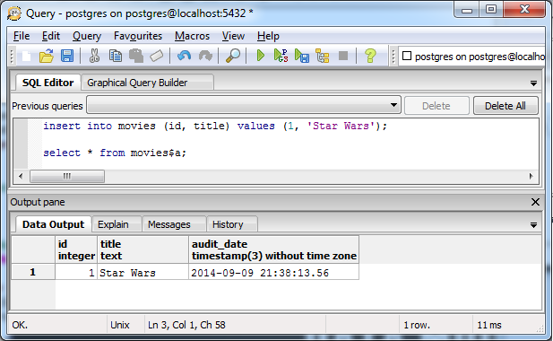
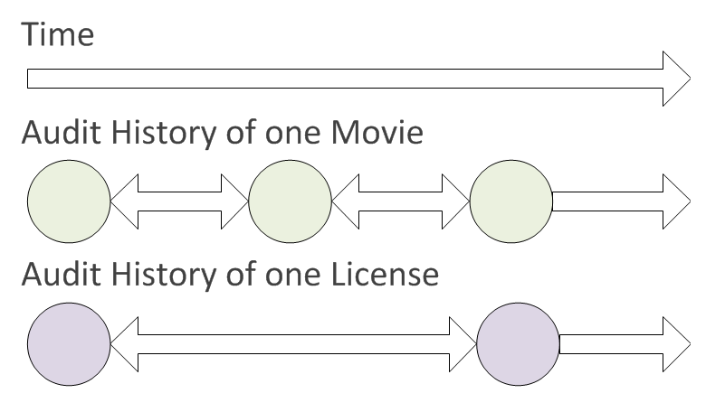

Immutable Data
in Postgres
The Problem

The Problem

The Problem

The Problem
- "Why is this different than a week ago?" - Customer
- Worse in regulated industries (e.g. pharma)
- Very time consuming
The Problem

Overview (1 of 2)
- Functional programming encourages immutable data
- Regulators require audit trails
- End users are really bad at describing problems
Overview (2 of 2)
- Database Design Considerations
- Coding Style
- Example Functionality
- Lessons Learned
Design Considerations (1 of 9)

Design Considerations (2 of 9)
create table movies (
id int primary key,
title text);
create table licenses (
id int primary key,
movie_id int references movies (id),
title text,
start_date timestamp,
end_date timestamp
);
Design Considerations (3 of 9)
create table movies$a (
id int,
title text,
audit_date timestamp with time zone);
create table licenses$a (
id int,
movie_id int references movies (id),
title text,
start_date timestamp,
end_date timestamp,
audit_date timestamp with time zone
);
Design Considerations (4 of 9)
create or replace function audit_movie_insert() returns trigger
language plpgsql AS $$
begin
execute
'insert into movies$a (id, title, audit_date, audit_action)
values ($1.id, $1.title, $2, ''I'');'
using new, now();
return null;
end;
$$;
create trigger movies$t
after insert on movies
for each row execute procedure audit_movie_insert();
Design Considerations (5 of 9)

Design Considerations (6 of 9)

Design Considerations (7 of 9)
select txid_current();
select
split_part(application_name, ',', 1) user,
split_part(application_name, ',', 2) request
from pg_stat_activity
where procpid = pg_backend_pid()
into v_context;
Design Considerations (8 of 9)

Design Considerations (9 of 9)
- Request context (user/guid)
- Usage (current vs historical)
- Storage (deltas vs full data)
- Manner of use (readonly production access vs. planned)
SQL Templates (1 of 2)
table_sql :=
format(
'-- audit table creation
create table %s$a
as select t.*,
null::text(1) audit_action,
null::text audit_request,
null::bigint audit_txid,
null::text audit_user,
null::timestamp audit_date
from %I t
where 0 = 1',
table_name,
table_name
);
SQL Templates (2 of 2)
- Unique comment on each query
- Commit output to version control
- %I for identifiers
- Functions to map column lists to text
Example Functionality
- Blame
- Undo
- Time Travelling Debugger
Demo - Blame Tool (1 of 3)
select audit_user,
audit_request,
audit_txid,
audit_date,
audit_action,
id,
(case when audit_action = 'D' then null else title end) title,
lag(title) over w title$prev
from movies$a a
window w as (partition by id order by audit_date asc)

Demo - Blame Tool (2 of 3)
with history as (...)
select history.*,
dense_rank() over w as r
from history
where ne(title, title$prev)
window w as (partition by id order by audit_date desc)
Demo - Blame Tool (3 of 3)
with history as (...),
ranked as (...)
select * from ranked where r = 1

Undo (1 of 3)
- Infrequent data changes (fix output of software)
- Target change by user/request/time
- Undo changed columns
- Output SQL
- Report on the results
Undo (2 of 3)
-- undo query
select array_agg(title) title,
array_agg(audit_txid) audit_txid,
id
from (
select audit_txid, id, title
from movies$a audit_data
where audit_data.audit_txid <= 324101
order by audit_txid desc
) a
group by id
update ...

Undo (3 of 3)
update movies
set
title =
(case when
ne(change.title[1], change.title[2])
then change.title[2]
else movies.title
end)
from change
where movies.id = change.id
and audit_txid[1] = 324101;
Principles for Data Corrections
- Provide production data to developers
- Scrub data for personal information
- Especially remove email addresses
- Produce a before/after report
- Repeatable code
Time Travelling Debugger (1 of 7)
select
id, movie_title, license_start, license_end
from
movie_history_vw
where
effective <@ (now() - interval '1 day')
Time Travelling Debugger (2 of 7)

Time Travelling Debugger (3 of 7)
select
tstzrange(
coalesce(m.audit_date, '-infinity'),
coalesce(lead(m.audit_date) over w_m, 'infinity'),
'[)'
) movie_effective,
...
from movies$a m
full outer join licenses$a l on l.movie_id = m.id
window w_m as (partition by m.id order by m.audit_date asc)
w_l as (partition by l.id order by l.audit_date asc)
Time Travelling Debugger (4 of 7)
with
effective_dates as (...),
select
coalesce(
license_effective,
tstzrange('-infinity', 'infinity', '[]'))
as license_effective_range,
effective_dates.*
from effective_dates
Time Travelling Debugger (5 of 7)
with
effective_dates as (...),
effective_ranges as (...)
select *
from effective_ranges
where movie_effective && license_effective_range
Time Travelling Debugger (6 of 7)
create view movie_history_vw as
with
effective_dates as (...),
effective_ranges as (...),
overlapping_ranges as (...)
select *
from effective_ranges
where movie_effective @> (now() - interval '1 day')
and license_effective @> (now() - interval '1 day')
Time Travelling Debugger (7 of 7)
create or replace function movie_history(timestamp with time zone)
returns setof movie_history_vw as
$$
declare
r record;
query text;
begin
return query
select *
from movie_history_vw
where license_effective @> $1
and movie_effective @> $1;
end
$$ language 'plpgsql';
select * from movie_history(now() - interval '1 day');
Lessons Learned
- Performance
- Testing
Unindexed Data (1 of 2)
- Data queried infrequently
- Used in ad hoc fashion
- End user experience is important
- Indexes add operations overhead
Unindexed Data (2 of 2)
- Create indexes as needed
- Single pass algorithms
- Filter queries as soon as possible
- Use 'except' to compare queries
Testing Considerations
- Use 'except' to compare queries
- Database replicas
- SQL tools hide whitespace